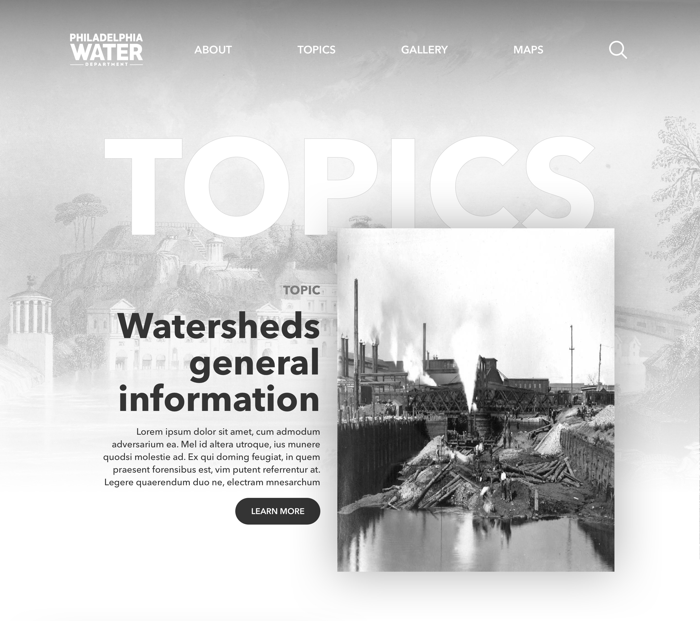
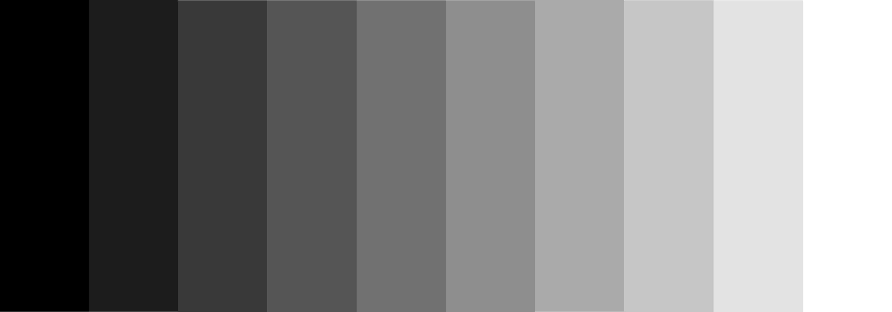
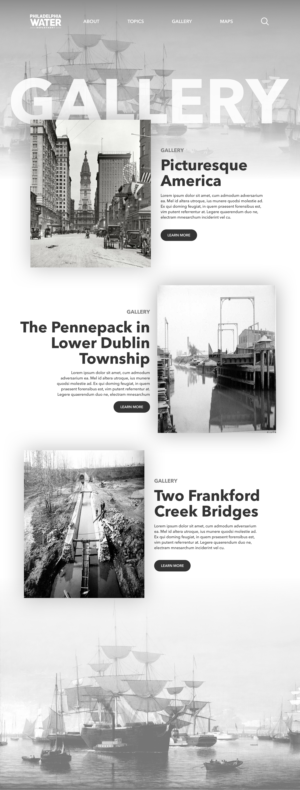
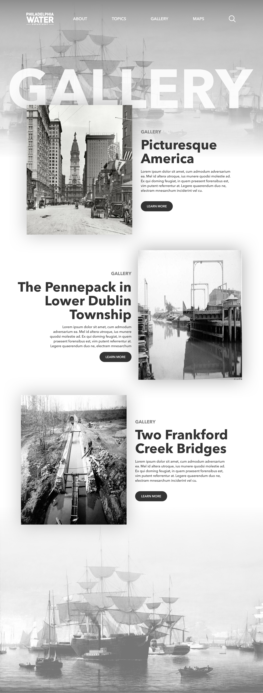
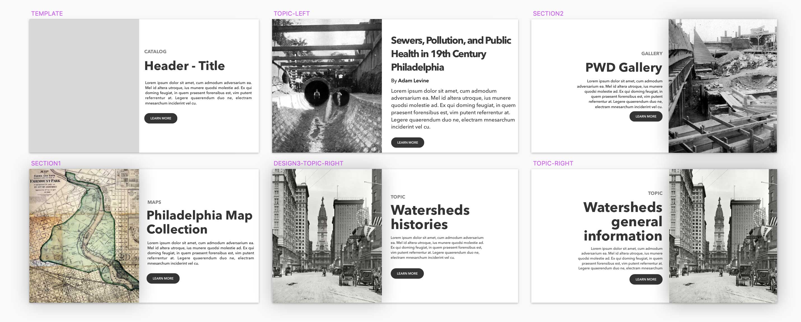
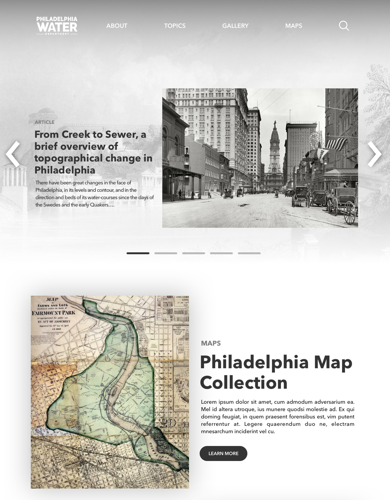
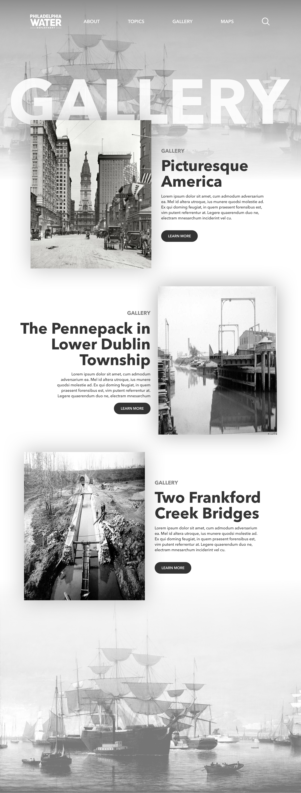

Philly H2O
An ongoing project
Overview:
We are creating a new Philadelphia Water History website to replace the existing PhillyH2O.org website. The new site will provide access to the PWD Historical Collection to facilitate research and educate customers about the history of the water and drainage systems in the City. The site will be maintained primarily by Adam Levine, staff historian and consultant to the PWD.
The new site will:
- Provide context and curation with better web experience
- Allow visitors such as researchers and teachers to find resources easily
- Keep great content from getting buried


 


We are using grayscale as the color scheme for the new site.

One of the site background is this picture.

